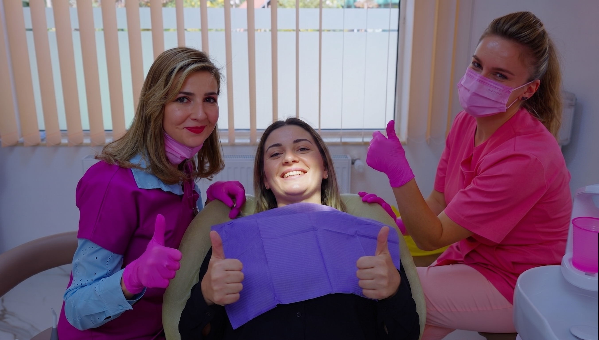
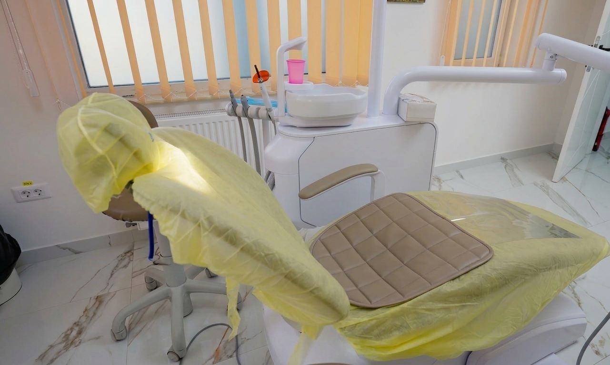

Atenție personalizată
Fiecare pacient are o situație diferită, iar recomandările sunt adaptate în funcție de diagnostic, vârstă, confort și obiective.
HopeDent este o clinică stomatologică din Comarnic, creată pentru pacienții care își doresc servicii stomatologice complete, explicații clare și o experiență cât mai confortabilă la dentist.

La HopeDent, ne dorim ca fiecare vizită la dentist să fie mai clară, mai calmă și mai ușor de parcurs. Punem accent pe sănătatea orală a pacientului, pe comunicare și pe recomandări adaptate fiecărei situații.
Fie că este vorba despre un control de rutină, o problemă apărută brusc sau un tratament mai complex, pacientul este ghidat pas cu pas, cu explicații clare și atenție la detalii.
Un tratament bun nu înseamnă doar procedura în sine, ci și modul în care pacientul înțelege ce se întâmplă. De aceea, la HopeDent, fiecare recomandare este explicată într-un limbaj clar, iar planul de tratament este construit în funcție de nevoile reale ale pacientului.
Fiecare pacient are o situație diferită, iar recomandările sunt adaptate în funcție de diagnostic, vârstă, confort și obiective.
Explicăm pașii tratamentului, opțiunile disponibile și motivele din spatele fiecărei recomandări.
Ne dorim ca vizita la dentist să fie cât mai predictibilă, calmă și bine organizată.
Clinica oferă servicii stomatologice pentru nevoi diferite, de la prevenție și stomatologie generală până la pedodonție, ortodonție, protetică, implantologie și chirurgie orală.


Am construit o abordare în care pacientul știe ce urmează, de ce este recomandat un anumit tratament și cum poate lua o decizie informată.